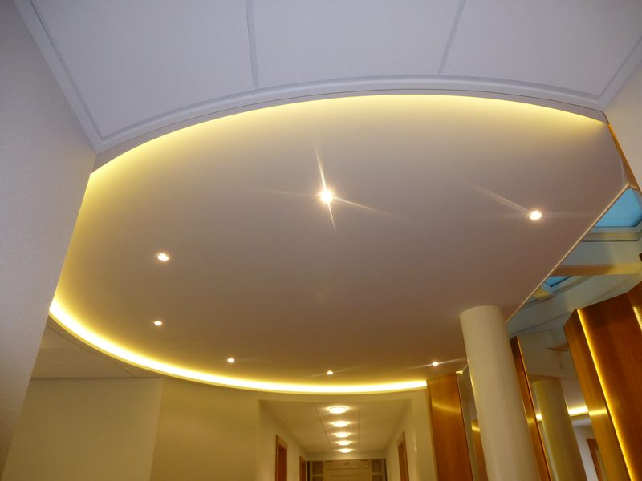
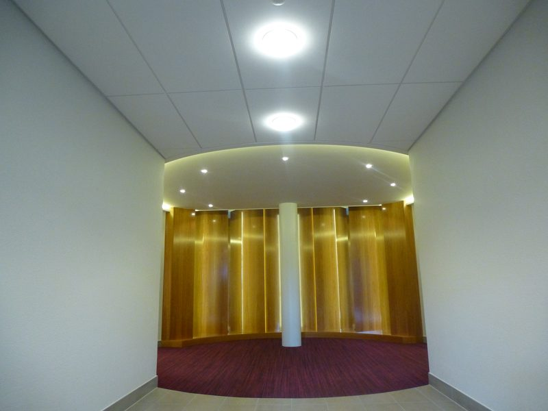
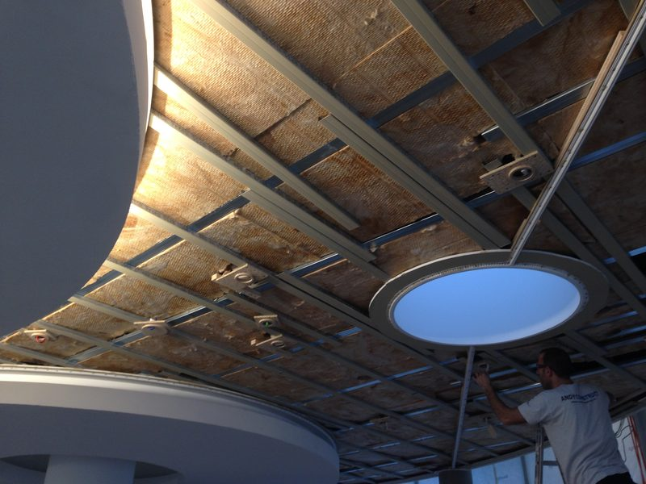

Carouge · depuis 2007
Placo, peinture et isolation en Suisse romande
Cloisons, plafonds, isolation contre le bruit et peinture : un seul interlocuteur, de la pose des plaques à la dernière couche.
Du lundi au vendredi, de 7 h à 18 h.
- Depuis 2007Inscrite au registre du commerce
- Siège à CarougeChantiers dans toute la Suisse romande
- Visite et devis gratuitsOffre écrite, sans engagement
Ils nous ont confié des travaux
- Ville de Genève
- OMC
- Mairie de Plan-les-Ouates
- Salle communale de Collonge-Bellerive
Et des particuliers, pour une cloison, un plafond ou une pièce à repeindre.
Voir toutes nos référencesNos quatre métiers
Quatre métiers, souvent sur le même chantier
Placo
Cloisons, doublages et faux-plafonds en plaques de plâtre.
Pour : logements, bureaux, commerces, salles.
Voir le placoPeinture
Murs et plafonds préparés, peints, et la pièce rendue propre.
Pour : appartements, fins de bail, cages d'escalier, bureaux.
Voir la peintureIsolation acoustique
Vous entendez vos voisins ? Nous isolons murs et plafonds.
Pour : logements, bureaux, salles communales.
Voir l'isolation acoustiqueCloisons isolantes
Une pièce froide contre un garage ou une cave ? Nous l'isolons.
Pour : villas, immeubles, locaux d'activité.
Voir les cloisons isolantes
Vous hésitez ? Décrivez votre besoin : nous vous orientons.
Demander un devisRéalisations
Des chantiers réels, photographiés par notre équipe
-

-

-


Comment nous travaillons
De la visite à la réception, quatre étapes
Visite
Nous venons voir les lieux, prenons les mesures et écoutons votre besoin.
Offre écrite
Détaillée poste par poste, en CHF, avec la durée des travaux et ce qui n'est pas compris.
Chantier protégé
Sols, meubles et passages protégés. Nettoyage chaque soir, et à fond le dernier jour.
Réception
Nous faisons le tour des finitions avec vous. Une retouche ? Nous revenons.
Aucun travail supplémentaire sans votre accord écrit et chiffré.
Régies, architectes, communes
Immeubles habités, offres sur plans et descriptifs, dossier de références à télécharger.
Espace professionnelsToute la Suisse romande
Depuis Carouge : Genève, Vaud, Neuchâtel, Fribourg, Valais romand, Jura et Jura bernois.
Voir la carteFaites-vous aussi les petits travaux ?
Oui. Une pièce à repeindre, une cloison ou un plafond à refaire nous intéressent autant qu'un grand chantier.
Combien coûtent vos travaux ?
Le prix dépend de la surface, de l'état des murs et des plafonds, de la hauteur, de l'accès et des finitions. Après la visite, vous recevez une offre écrite détaillée, en CHF.
La visite et le devis sont-ils payants ?
Non. La visite et le devis sont gratuits et sans engagement. Vous décidez une fois l'offre écrite reçue.
En combien de temps pouvez-vous venir ?
Nous vous rappelons le jour même ou le jour ouvrable suivant, et proposons une visite en général dans la semaine. Le délai des travaux figure dans l'offre.
Intervenez-vous hors de Genève ?
Oui, dans toute la Suisse romande : Vaud, Neuchâtel, Fribourg, Valais romand, Jura et Jura bernois. Nous avons par exemple travaillé à Coppet, à Nyon et à Chavannes-de-Bogis.
Comment protégez-vous mon logement pendant les travaux ?
Nous couvrons les sols et les meubles, fermons la zone de travail par des bâches si nécessaire et nettoyons chaque soir. Le dernier jour, nous rendons les lieux propres.
Travaillez-vous pour les régies, les architectes et les communes ?
Oui. La Ville de Genève, des salles communales, le Conservatoire de musique et la HEAD nous ont confié des travaux. Les professionnels trouvent nos documents sur une page dédiée.
Et si un défaut apparaît après les travaux ?
Appelez-nous : nous revenons. Pour les contrats conclus depuis 2026, la loi vous laisse 60 jours, dès que vous le découvrez, pour signaler un défaut d'un ouvrage.
Votre demande
Demander un devis
3 étapes, environ une minute. Nous vous rappelons pour convenir d'une visite.
- Nous vous rappelons le jour même ou le jour ouvrable suivant.
- La visite et le devis sont gratuits et sans engagement.
- Vos coordonnées servent uniquement à votre demande. Pas de publicité.
Vous préférez qu'on vous rappelle ?
Laissez simplement votre numéro.
Par téléphone
Bureau : +41 22 771 20 15
Sur les chantiers : +41 78 631 14 34
Du lundi au vendredi, 7 h – 18 h
Ils nous ont confié des travaux : Ville de Genève · Conservatoire de musique de Genève · HEAD – Genève · Mairie de Plan-les-Ouates · Salle communale de Collonge-Bellerive · et des particuliers de toute la région.